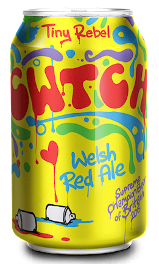

Cwtch Welsh Red Ale
Tiny Rebel Brewing
Wales
330mL can
4.6% Alc/Vol
Probably the best word ever. Cwtch (rhymes with butch) can mean either cuddle or cubbyhole. Grab a glass, relax and cwtch up with this untraditional Welsh red ale - a perfect blend of six caramelly malts and three citrussy American hops.
It isn't your average bitter - the hops do more to this deep amber coloured beer than just provide bite. Any old hop can do that! We've selected some of the most aromatic and tangy hops from the other side of the pond to give this red a fresh hit that complements the caramel flavours of the malts that gives this beer its colour. Drinkability and balance makes this beer.
We love a good Cwtch, and we're not the only ones... This beer won Supreme Champion Beer of Britain in 2015.
Tiny Rebel was founded in Newport in 2012 by brothers-in-law Bradley Cummings and Gareth Williams. Williams had learned to homebrew with his grandfather, and introduced his brother-in-law to the hobby. After brewing in Cumming's father's garage for a number of years, the pair decided to make their hobby their profession.
In 1956, the US Government exposed bottles and cans of beer to nuclear explosions to determine whether the contents remained safe to drink. They declared the levels of radiation “well within the permissible limits for emergency use” although there was a “slight flavour change in some of the products”